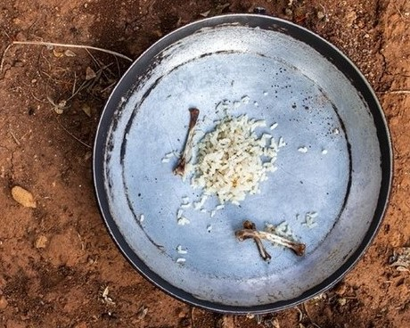
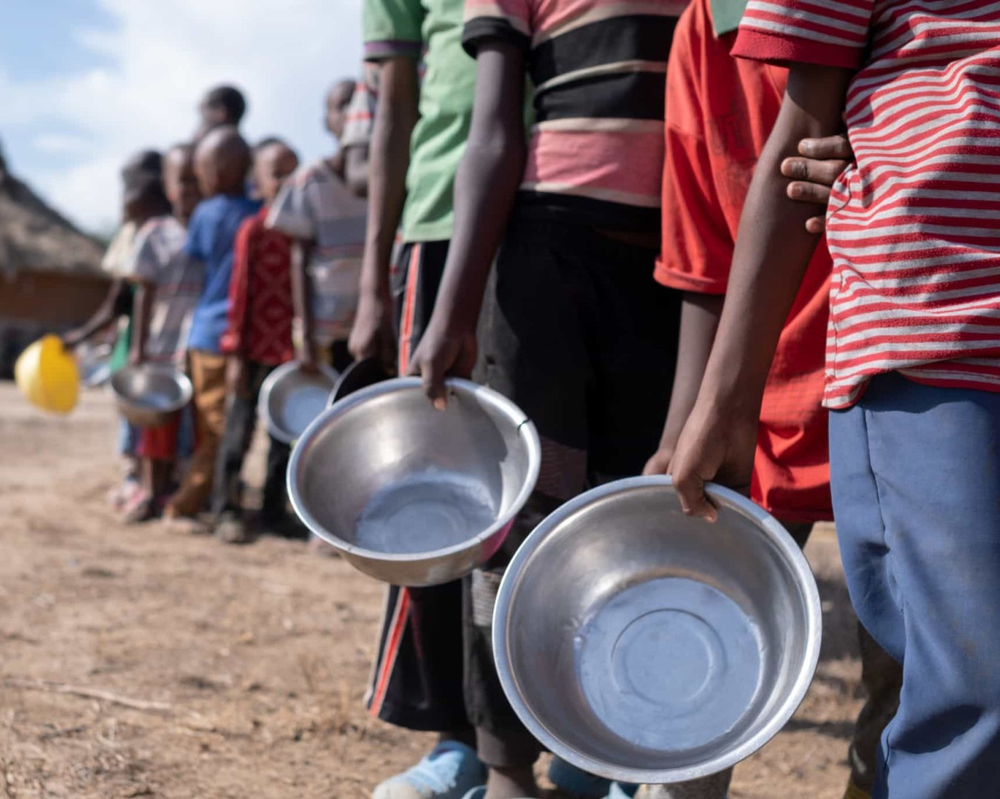
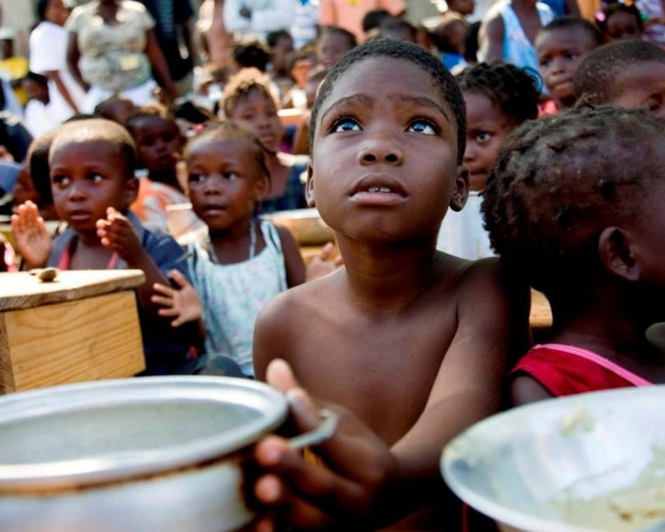

A fome no mundo
Enquanto o desperdício se alimenta, a fome padece.

Cerca de 821 milhões de pessoas no mundo não têm acesso suficiente a alimentos. A fome é uma realidade enfrentada por milhões de pessoas todos os dias, privando-as de uma necessidade básica para viver com dignidade.

Todos os dias, 25.000 pessoas morrem de fome no mundo. Essa triste estatística destaca a urgência de agir contra a fome e trabalhar para garantir o acesso universal a alimentos adequados e nutritivos.

Aproximadamente 149 milhões de crianças em todo o mundo sofrem de desnutrição crônica, o que prejudica seu crescimento físico e desenvolvimento cognitivo. A fome na infância compromete as oportunidades de educação, saúde e bem-estar dessas crianças.